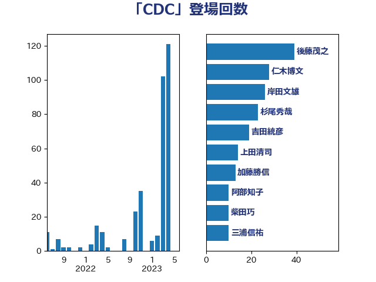

単語「CDC」

| 後藤茂之 | 自由民主党 | 39 回 |
| 仁木博文 | 無所属 | 28 回 |
| 岸田文雄 | 自由民主党 | 26 回 |
| 杉尾秀哉 | 立憲民主党 | 23 回 |
| 吉田統彦 | 立憲民主党 | 19 回 |
| 上田清司 | 国民民主党 | 14 回 |
| 加藤勝信 | 自由民主党 | 13 回 |
| 阿部知子 | 立憲民主党 | 10 回 |
| 柴田巧 | 日本維新の会 | 10 回 |
| 三浦信祐 | 公明党 | 10 回 |
| 塩田博昭 | 公明党 | 9 回 |
| 青柳陽一郎 | 立憲民主党 | 8 回 |
| 田村憲久 | 自由民主党 | 7 回 |
| 川合孝典 | 国民民主党 | 6 回 |
| 阿部司 | 日本維新の会 | 5 回 |
| 西村智奈美 | 立憲民主党 | 4 回 |
| 本田顕子 | 自由民主党 | 4 回 |
| 古屋範子 | 公明党 | 4 回 |
| 高木かおり | 日本維新の会 | 3 回 |
| 石原宏高 | 自由民主党 | 3 回 |
| 田村まみ | 国民民主党 | 3 回 |
| 瀬戸隆一 | 自由民主党 | 3 回 |
| 水野素子 | 立憲民主党 | 3 回 |
| 川田龍平 | 立憲民主党 | 3 回 |
| 佐藤英道 | 公明党 | 3 回 |
| 伊東信久 | 日本維新の会 | 3 回 |
| 伊佐進一 | 公明党 | 3 回 |
| 長谷川淳二 | 自由民主党 | 2 回 |
| 藤井一博 | 自由民主党 | 2 回 |
| 石井啓一 | 公明党 | 2 回 |
| 田中健 | 国民民主党 | 2 回 |
| 玉木雄一郎 | 国民民主党 | 2 回 |
| 河西宏一 | 公明党 | 2 回 |
| 松本尚 | 自由民主党 | 2 回 |
| 平木大作 | 公明党 | 2 回 |
| 山崎正恭 | 公明党 | 2 回 |
| 宮本徹 | 日本共産党 | 2 回 |
| 堀場幸子 | 日本維新の会 | 2 回 |
| 堀内詔子 | 自由民主党 | 2 回 |
| 土田慎 | 自由民主党 | 2 回 |
| 友納理緒 | 自由民主党 | 2 回 |
| 上月良祐 | 自由民主党 | 2 回 |
| 青山大人 | 立憲民主党 | 1 回 |
| 長妻昭 | 立憲民主党 | 1 回 |
| 遠藤良太 | 日本維新の会 | 1 回 |
| 西村康稔 | 自由民主党 | 1 回 |
| 芳賀道也 | 国民民主党 | 1 回 |
| 篠原孝 | 立憲民主党 | 1 回 |
| 福重隆浩 | 公明党 | 1 回 |
| 神谷政幸 | 自由民主党 | 1 回 |
| 熊谷裕人 | 立憲民主党 | 1 回 |
| 泉健太 | 立憲民主党 | 1 回 |
| 河野太郎 | 自由民主党 | 1 回 |
| 沢田良 | 日本維新の会 | 1 回 |
| 江田憲司 | 立憲民主党 | 1 回 |
| 柚木道義 | 立憲民主党 | 1 回 |
| 林芳正 | 自由民主党 | 1 回 |
| 松野明美 | 日本維新の会 | 1 回 |
| 本田太郎 | 自由民主党 | 1 回 |
| 本庄知史 | 立憲民主党 | 1 回 |
| 星北斗 | 自由民主党 | 1 回 |
| 早稲田ゆき | 立憲民主党 | 1 回 |
| 斎藤アレックス | 国民民主党 | 1 回 |
| 徳永エリ | 立憲民主党 | 1 回 |
| 島村大 | 自由民主党 | 1 回 |
| 宮路拓馬 | 自由民主党 | 1 回 |
| 塩川鉄也 | 日本共産党 | 1 回 |
| 國場幸之助 | 自由民主党 | 1 回 |
| 吉良よし子 | 日本共産党 | 1 回 |
| 吉田とも代 | 日本維新の会 | 1 回 |
| 伊藤孝恵 | 国民民主党 | 1 回 |
| 中田宏 | 自由民主党 | 1 回 |
| 中島克仁 | 立憲民主党 | 1 回 |